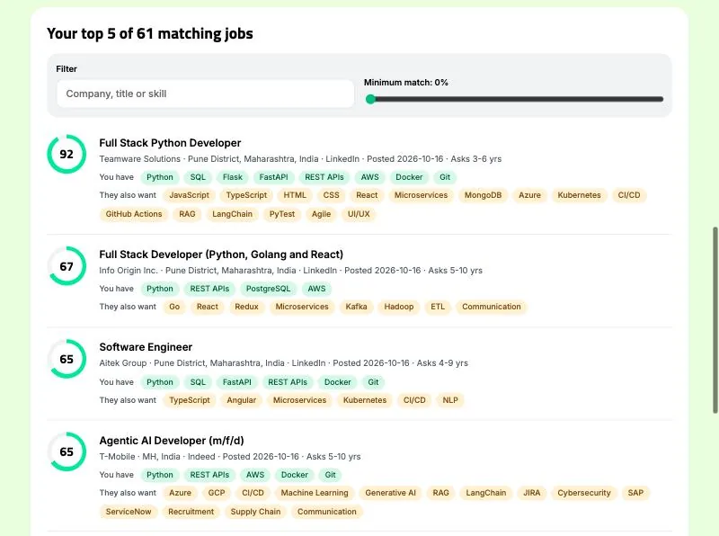
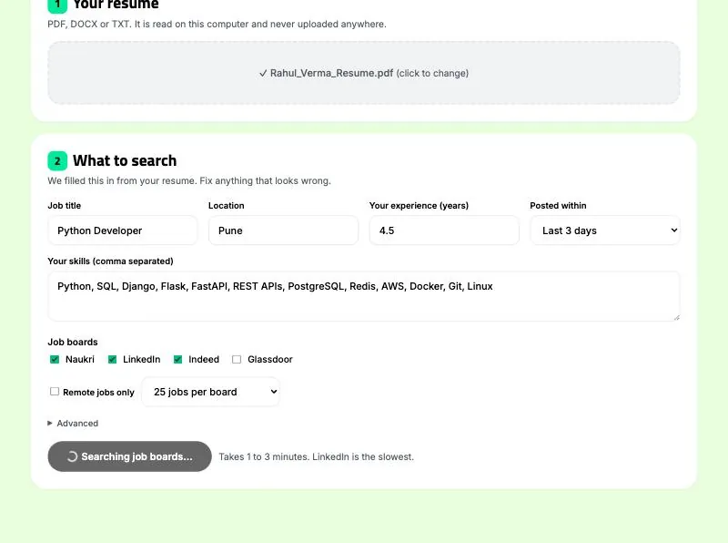
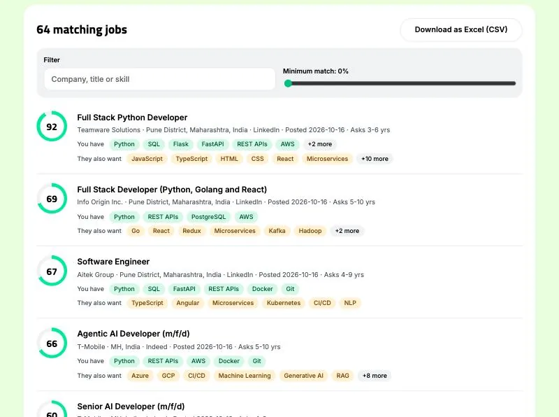

JobMatch
Job search for India, on your computer
Upload your resume once. See the jobs that fit.
JobMatch searches Naukri, LinkedIn, Indeed and Glassdoor together and scores every job from 0 to 100 by how well it fits you, right on your computer.
For Windows 10/11 and macOS. Two free searches, no sign-up. Then a one-time pass with no autopay.

- The problem
- Four job sites, four searches, the same job posted three times, and no way to tell which of hundreds of posts actually fit your resume.
- What we fixed
- JobMatch searches the four boards at once, scores every job against your resume, and shows the skills you have and the ones to add.
Inside JobMatch
The desktop app, with a sample resume. Each score has its reasons.
-

Search four boards at onceYour title, location and skills are filled in from your resume. Fix anything it got wrong, pick the job boards and search. -
Every job scoredEach job gets a score from 0 to 100, the skills you have, and the skills it also asks for. -

The full listAll matching jobs, filtered by minimum match, and downloadable as an Excel file.
How it works
Drop in your resume
PDF, Word or text, about 30 seconds. JobMatch picks out your skills, title and years of experience. Fix anything it got wrong.
Search four boards at once
One to three minutes. Naukri, LinkedIn, Indeed and Glassdoor, for one city or all of India, with filters for freshers, entry-level jobs and walk-in interviews.
Apply to the best fits first
Open the top cards, mark them saved or applied, and come back tomorrow to see only what is new.
What you get
Scores with reasons
Click Why on any card to see how the score was made. Trust the number or overrule it.
Skills to add
Skills a job asks for that your resume does not mention are listed separately.
Four boards at once
Naukri, LinkedIn, Indeed and Glassdoor in one search.
It remembers your search
Jobs you have not seen before are marked new, and every search is kept.
Your own pipeline
Saved, applied, interview and offer, with notes.
One resume per role
Switch between saved resumes in one click.
Messages ready to send
A cover letter, a note to the recruiter and a follow-up, filled in for each job.
A real Excel file
Save your matches or your tracker, with clickable links.
Read on your computer
Stays on your computer
- Your resume is read on your computer, not uploaded
- Searches, notes and your tracker are saved on your computer, not in our database
What goes out
- A job title and a city go to the job boards, the same as when you search by hand
Online resume tools upload your resume to their servers. JobMatch reads it on yours. Read JobMatch's privacy policy.
Get JobMatch
For Windows 10/11 and macOS. Two free searches, no sign-up. Then a one-time pass with no autopay.
- Platforms
- Windows 10/11 and macOS
- Free trial
- Two searches, each showing the top 5 matches
- Pricing
- A one-time pass, no autopay. See the site for current prices.
 ZeroAuth
ZeroAuth Saifu
Saifu Parchi
Parchi Tegami
Tegami Passo
Passo Helm
Helm Revive
Revive